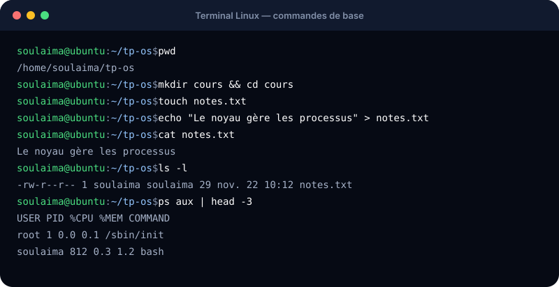

Podcast
Le podcast n'a pas pu être chargé.
Épisode à deux voix : Denise présente chaque partie, Henri explique le contenu du résumé.
Systèmes · Systèmes d'exploitation
Le logiciel qui fait le lien entre le matériel et les applications : gestion des processus, de la mémoire, des fichiers et des périphériques.
Un système d'exploitation (OS) est l'ensemble des programmes qui gèrent les ressources de l'ordinateur et offrent une interface aux utilisateurs et aux applications. Son cœur s'appelle le noyau (kernel).
L'utilisateur interagit via une interface graphique (fenêtres, icônes) ou une interface en ligne de commande (terminal, shell : Bash, PowerShell), plus rapide et automatisable.
Propriétaire (Windows, macOS) : code fermé. Libre / open source (Linux) : code consultable et modifiable, distributions comme Ubuntu, Debian, Fedora.
| Critère | Windows | Linux | macOS |
|---|---|---|---|
| Éditeur | Microsoft | Communauté (noyau de Linus Torvalds) | Apple |
| Licence | Propriétaire, payante | Libre et gratuite | Propriétaire, livrée avec les Mac |
| Matériel | Très large choix de PC | Presque tout, y compris les vieux PC et serveurs | Uniquement les Mac |
| Système de fichiers | NTFS | ext4 (et autres) | APFS |
| Terminal | PowerShell, CMD | Bash, Zsh | Zsh |
| Sécurité | Plus ciblé par les malwares | Droits stricts, peu ciblé sur poste | Bonne, écosystème fermé |
| Usages | Bureautique, jeux | Serveurs, développement, cloud | Création graphique, vidéo, dev iOS |
| Action | Linux (Bash) | Windows (PowerShell) |
|---|---|---|
| Où suis-je ? | pwd | Get-Location (pwd) |
| Lister les fichiers | ls -l | Get-ChildItem (ls) |
| Changer de dossier | cd Documents | cd Documents |
| Créer un dossier | mkdir projet | mkdir projet |
| Créer un fichier | touch notes.txt | New-Item notes.txt |
| Afficher un fichier | cat notes.txt | Get-Content notes.txt |
| Copier / déplacer | cp / mv | Copy-Item / Move-Item |
| Supprimer | rm notes.txt | Remove-Item notes.txt |
| Voir les processus | ps aux / top | Get-Process |
Exemple de session Linux :
$ pwd
/home/soulaima
$ mkdir tp-os && cd tp-os
$ touch notes.txt
$ echo "Le noyau gère les processus" > notes.txt
$ cat notes.txt
Le noyau gère les processus
$ ls -l
-rw-r--r-- 1 soulaima soulaima 29 nov. 22 10:12 notes.txtCapture d'écran :

Script de ma vidéo : « Sans système d'exploitation, ton ordinateur ne sait rien faire. Je présente ses 4 rôles, je compare Windows, Linux et macOS et je fais une démonstration des commandes de base dans le terminal. »
Le podcast n'a pas pu être chargé.
Épisode à deux voix : Denise présente chaque partie, Henri explique le contenu du résumé.
Lecture complète du résumé du cours, idéale pour réviser en écoutant.
Le vocal n'a pas pu être chargé. Vous pouvez écouter la voix du navigateur :
Partagez cette fiche de révision avec la classe.